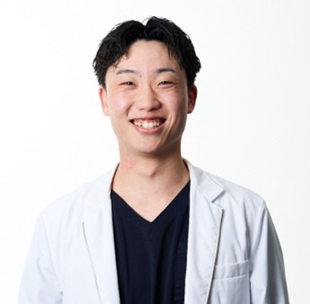

動ける身体は、
人生の選択肢を増やす。
肩こり、腰痛、不眠、疲れ。
頑張り続けるあなたの身体に、
鍼灸と整体で本来の力を取り戻す。
当院について
中村鍼灸整体院
だからできること

毎日頑張る中で感じる首こり・肩こり・腰痛・姿勢の崩れ・食いしばり・自律神経の乱れは、身体からのサインかもしれません。
中村鍼灸整体院では港区赤坂で整体・鍼灸・美容鍼を提供しています。痛みのある場所だけでなく、身体全体のバランスや動きを確認し、不調の原因を見極めながら、一人ひとりに合わせた施術をご提供します。
その場だけの気持ちよさではなく、「疲れにくい身体」「動きやすい身体」を目指し、仕事や趣味、旅行まで思いきり楽しめる身体づくりをサポートします。初めての方にも安心してご相談いただけるよう丁寧なカウンセリングを大切にしています。
-
01
丁寧なカウンセリング
症状だけでなく、生活習慣や姿勢、身体の使い方まで確認し、
不調の原因を一緒に見つけていきます。 -
02
海外解剖研修で培った知識と技術
整体と鍼灸、それぞれの特長を活かし、
肩こり・腰痛・姿勢改善・可動域改善・美容鍼まで幅広く対応しています。 -
03
通いやすいプライベート空間
港区赤坂にある完全予約制のプライベートサロン。
赤坂・溜池山王・六本木一丁目駅からアクセスしやすく、お仕事帰りにも通いやすい環境です。
ごあいさつ

院長 中村 勇斗
院長紹介
身体が変わると、人生の選択肢が増える
はじめまして。
中村鍼灸整体院 院長の中村勇斗です。
私が目指しているのは、肩こりや腰痛を改善することだけではありません。
身体が変わることで、
・旅行を思いきり楽しめる。
・仕事に集中できる。
・趣味に夢中になれる。
・大切な人との時間を笑顔で過ごせる。
そんな「人生の選択肢を広げる身体」をつくることが、私の使命です。
痛みがある場所だけを見るのではなく、「なぜその不調が起きているのか」を解剖学の視点から考え、一人ひとりに合わせた施術をご提供しています。
「とりあえず楽になりたい」だけではなく、
「この先も好きなことを思いきり楽しめる身体でいたい。」
そんな想いをお持ちの方にこそ、お力になりたいと考えています。
完全予約制のプライベート空間で、誰にも急かされることなく、ご自身の身体とじっくり向き合う時間をご提供します。
まずはお気軽にご相談ください。
あなたの身体だけでなく、その先の毎日までサポートさせていただきます。
プロフィール
国家資格(はり師・きゅう師)取得後、大阪で鍼灸師として経験を積み、海外解剖研修に参加。人体構造を実際に学び、解剖学への理解を深める。
その後、東京都港区の美容鍼灸整体院で幅広い臨床経験を重ね、肩こり・腰痛・姿勢改善・可動域改善・美容鍼・自律神経への施術を中心に、多くのお客様を担当。
現在は港区赤坂にて、中村鍼灸整体院を開院。解剖学に基づいた整体・鍼灸を通じて、「身体が変わることで人生の選択肢が増える」施術を提供している。
- はり師第188855号
- きゅう師第188606号
施術料金
施術料金
（90分）
| メニュー | 料金（税込） |
|---|---|
| 初回施術 | ¥9,000 |
| 鍼灸整体 | ¥18,000 |
| 鍼灸整体＋美容鍼 | ¥21,000 |
【医療費控除】について
当院は保健所へ正式に開設届を提出している鍼灸院となります。そのため症状改善を目的とした鍼灸施術に関しては、医療費控除の対象となる場合がございます。
-
01
医療費控除の対象になる可能性がある
肩こり・腰痛・頭痛・自律神経症状など、治療目的の施術は医療費控除の対象として扱われる場合があります。
-
02
確定申告時に活用できる
領収書を保管いただくことで、確定申告時の医療費控除申請にご利用いただけます。
-
03
実質的なご負担軽減に繋がる場合がある
医療費控除を活用することで、税負担の軽減に繋がるケースもございます。
※ 美容目的の施術は対象外となる場合があります。
※ 詳細は税務署または顧問税理士様へご確認ください。
お客様の声
実際に通っていただいているお客様からいただいたお声の一部をご紹介します。
← スワイプで他の声を見る →
初めての方へ
ご来院からお会計までの流れと、よくいただくご質問をまとめました。
ご予約
LINEにてご希望の日時をご連絡ください。
問診・カウンセリング
お身体の状態や生活習慣について、じっくりお話を伺います。
施術
カウンセリングをもとに、鍼灸・整体を組み合わせて施術いたします。
アフターケア
今後の通院ペースやセルフケアの方法をご案内し、次回のご予約を承ります。
よくあるご質問
髪の毛ほどの細さの鍼を使用するため、痛みを感じる方は少ないです。ツボに鍼が入ると「ひびき」と呼ばれる独特の鈍い感覚が出ることがありますが、これは鍼がしっかり効いているサインです。
普段着のままお越しいただいて問題ありません。院内に着替えもご用意しておりますので、動きやすい服装がなくてもご安心ください。
コースにより異なりますが、初診の方はカウンセリングを含めて90分ほどお時間をいただいております。
当院ではディスポーザブル（使い捨て）の鍼を使用しており、使い回しは一切ございません。感染症等のご心配なくお受けいただけます。
必ず行うわけではありません。お身体の状態や症状、ご希望に合わせて、整体のみ、または整体と鍼灸を組み合わせた施術をご提案しています。鍼が苦手な方に無理に施術を行うことはありませんので、ご安心ください。
はい、お着替えをご用意しております。お仕事帰りやお出かけ前でも、そのままの服装でお気軽にご来院いただけます。
各種クレジットカードをご利用いただけます。現金・PayPay・交通系IC・その他QRコード決済には対応しておりません。あらかじめご了承ください。
ご不明な点がございましたら、お気軽にLINEよりお問い合わせください。
LINEで相談・予約する